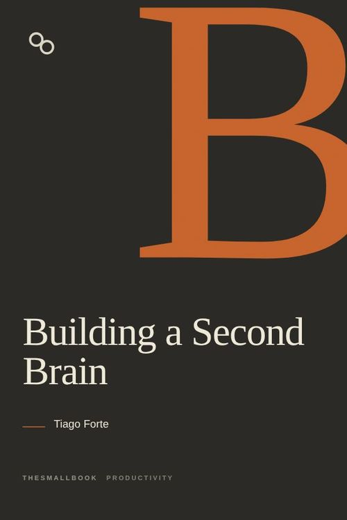

Library › Authors › Tiago Forte
Books by Tiago Forte
Tiago Forte has one book in the library. Every book here is read down to the big idea, the lessons, the lines worth keeping and the actions worth taking. Start with the summary, then buy the full book if it earns a place on your shelf.

Building a Second Brain
2022 · 11 min · 8 lessons
Your brain is for having ideas, not storing them. Capture what resonates, organise by action, distill the essence and express it in your work.
We consume more information than ever, yet most of it vanishes within days. Tiago Forte argues we need a second brain: a personal digital system that stores ideas, notes and resources so our biological brain can focus on thinking and creating. His method has two parts. CODE describes the process: Capture what resonates, Organise it for action, Distill it to its essence, and Express it by creating something. PARA describes the structure: Projects, Areas, Resources and Archives. Together they turn scattered notes...
Lessons in the summary
- Why You Need a Second Brain
- Capture: Keep What Resonates
- Organise With PARA
- Distill: Progressive Summarisation
- Express: Show Your Work
- The Creative Process: Divergence and Convergence
- Habits That Keep the System Alive
- Your Second Brain Compounds
Lines worth keeping
- Your mind is for having ideas, not holding them.
- Organize for action, not by subject.
- The point is not to collect as many notes as possible. It is to use them.
Questions Tiago Forte helps answer
Read nearby authors next
- Robin Sharma 5 books
- Cal Newport 4 books
- Daniel H. Pink 3 books
- Nir Eyal 3 books
- Atul Gawande 2 books
- Brian Tracy 2 books
- Johann Hari 2 books
- Josh Kaufman 2 books